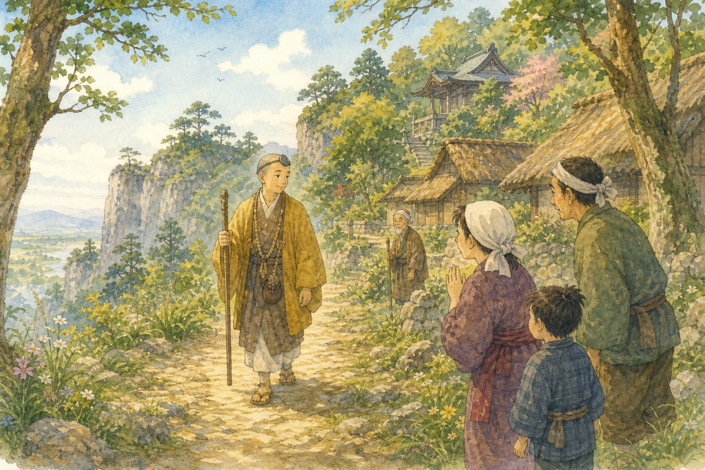
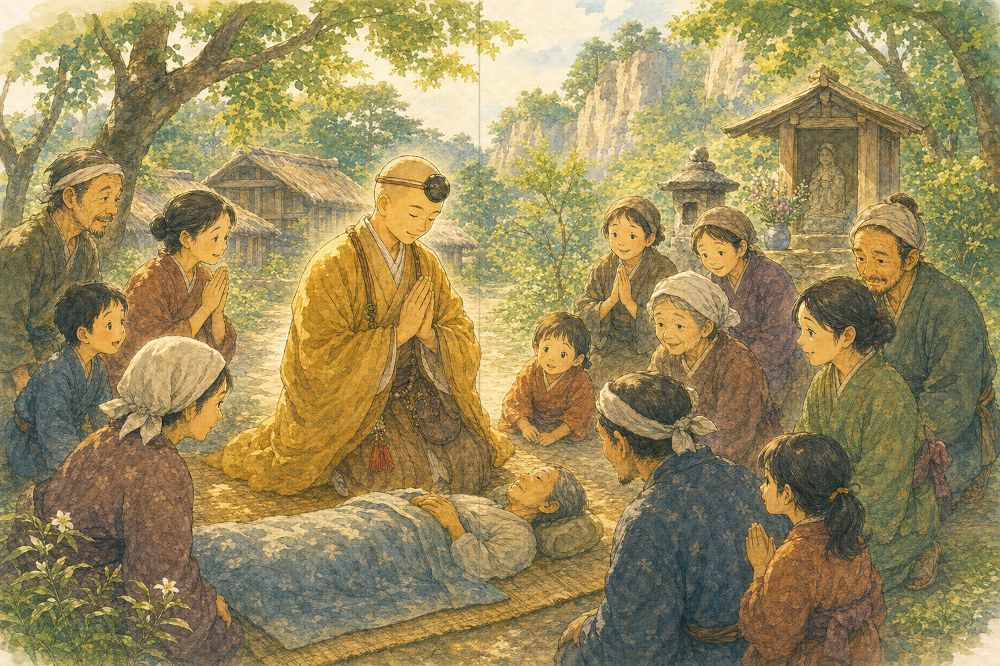
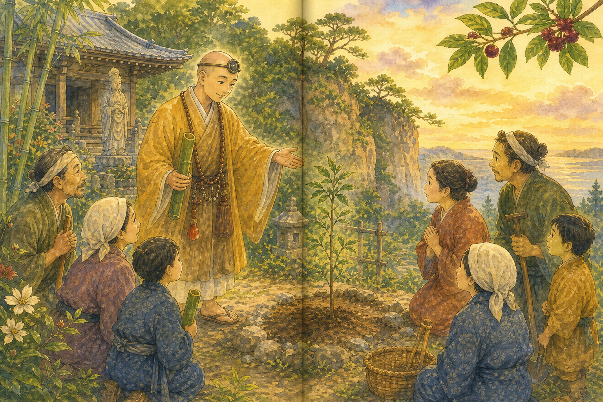
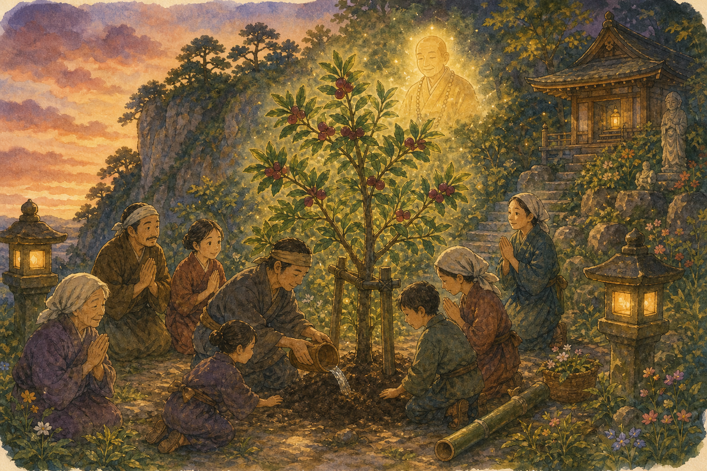
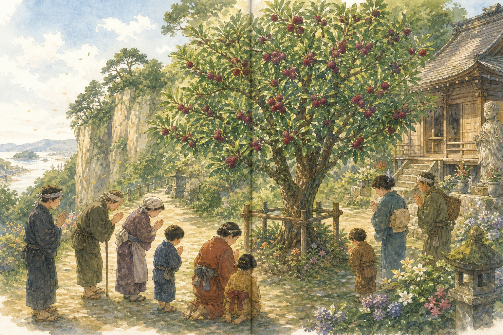
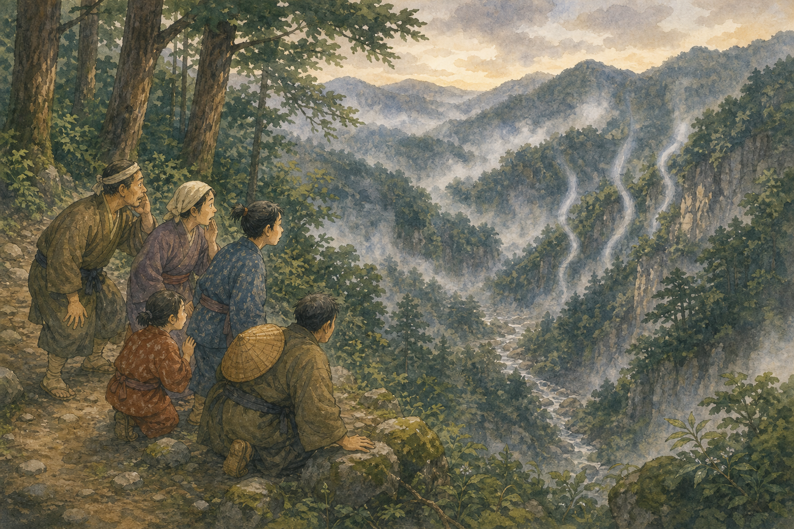
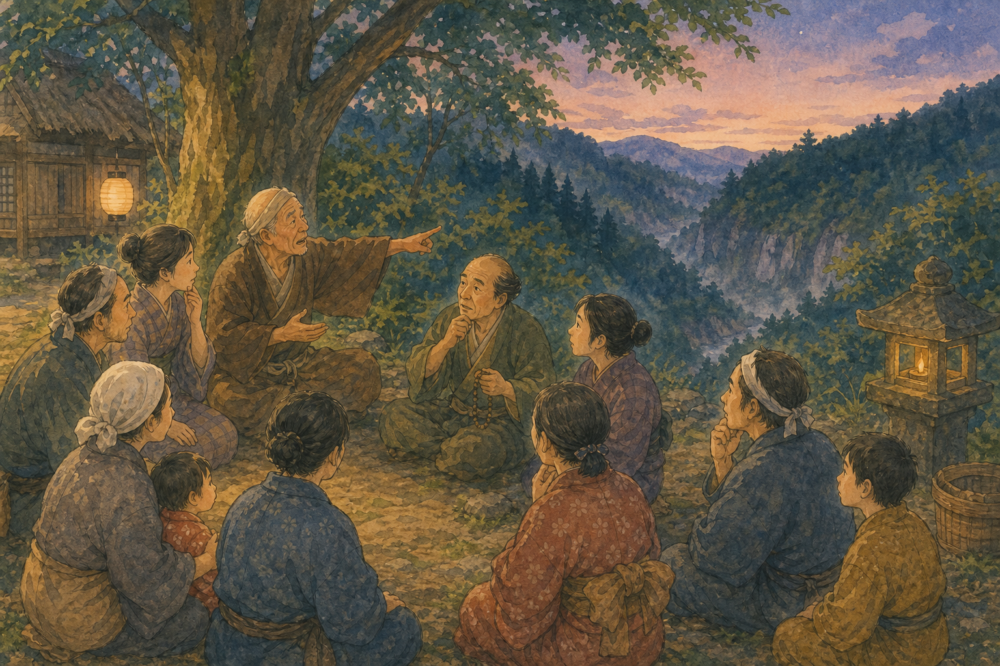
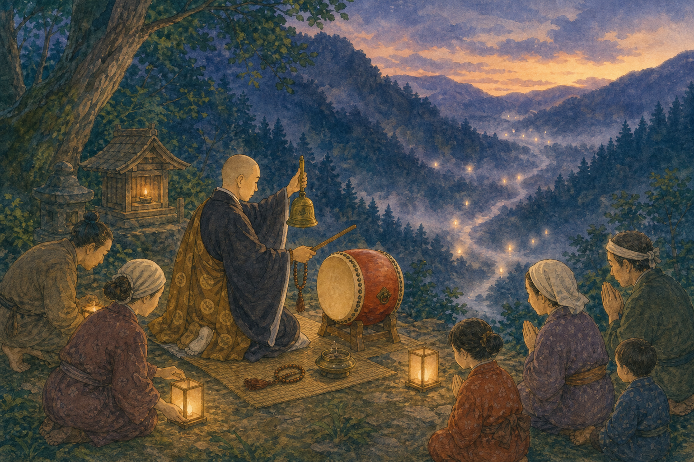
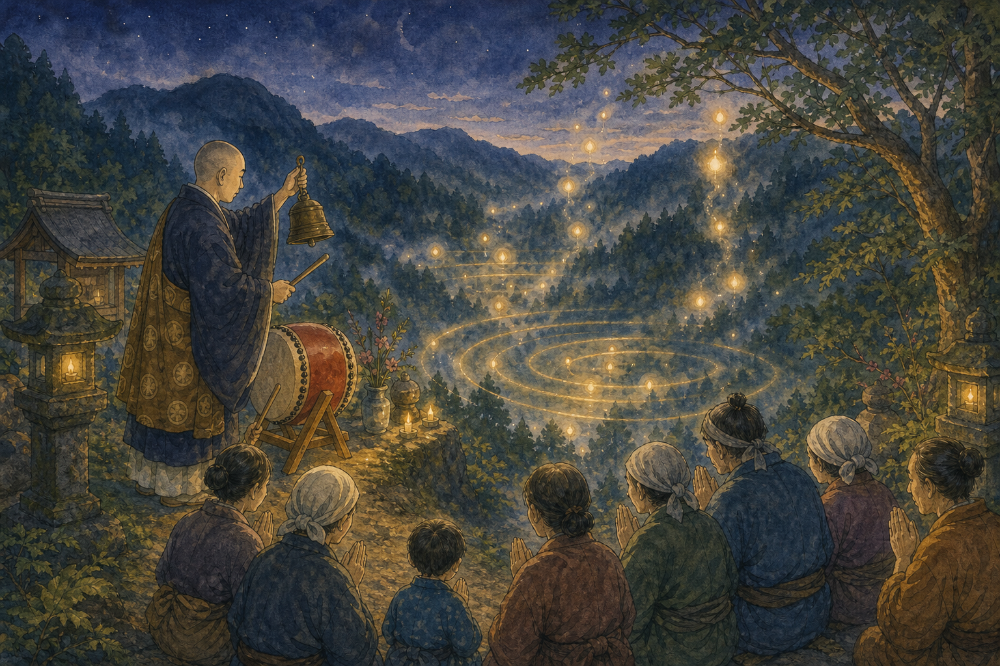
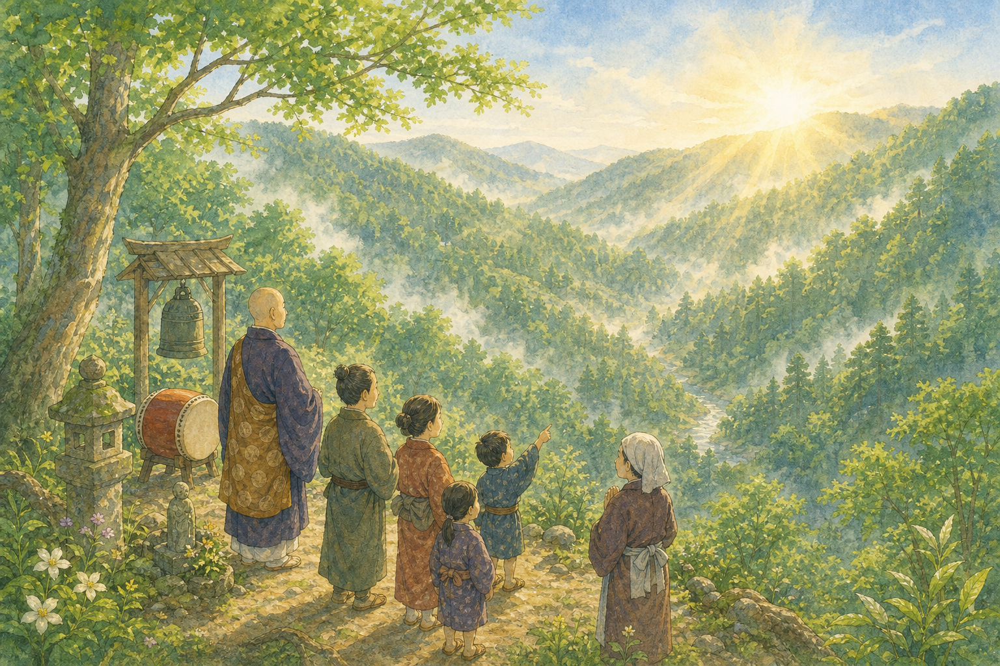

布橋の山桃さま
旅のおぼうさん
、旅のおぼうさんが、の近くに来ました。
おぼうさんは、の人をたすける、な力をもっていました。
村の人たちは、そっとおぼうさんを見つめました。
1絵本みたいなHTML版

布橋の山桃さま
、旅のおぼうさんが、の近くに来ました。
おぼうさんは、の人をたすける、な力をもっていました。
村の人たちは、そっとおぼうさんを見つめました。
1
布橋の山桃さま
「なおしてください。」
たくさんの人が、おぼうさんのところへ来ました。
おぼうさんがと、病気の人は少しずつになりました。
2
布橋の山桃さま
ある日、おぼうさんは言いました。
「毎年、の木をください。」
「がなる前にお祈りをすれば、病気がなおりますよ。」
3
布橋の山桃さま
おぼうさんは、土の中でをとなえつづけました。
やがて、おぼうさんは。
病気がなおった人たちは、おぼうさんを「山桃さま」とよびました。
4
布橋の山桃さま
人びとは、竹のつつにお酒を入れてしました。
そして、その上に山桃の木を植えました。
この木は、今もの庭にあるといわれています。
5
さいががけの谷
が浜松のお城にいたころのことです。
の戦いのあと、犀ヶ崖の近くでへんな音が聞こえました。
それは、の底から聞こえてくるようでした。
6
さいががけの谷
村の人たちは言いました。
「ここは、戦いでたくさんのが亡くなった場所だ。」
「まだいるのかもしれない。お祈りをしよう。」
7
さいががけの谷
というおぼうさんが、谷のそばに立ちました。
昼でもくらい谷に、村の人たちも集まりました。
とを用意して、しずかに手を合わせました。
8
さいががけの谷
宗円は、鐘とたいこを鳴らしながら、お経をとなえました。
その音は、谷の底までいきました。
すると、へんな声は少しずつ消えていきました。
9
さいががけの谷
それから、谷から聞こえた声は聞こえなくなりました。
人びとは、亡くなった人たちのために祈りつづけました。
これが「」のはじまりだといわれています。
10